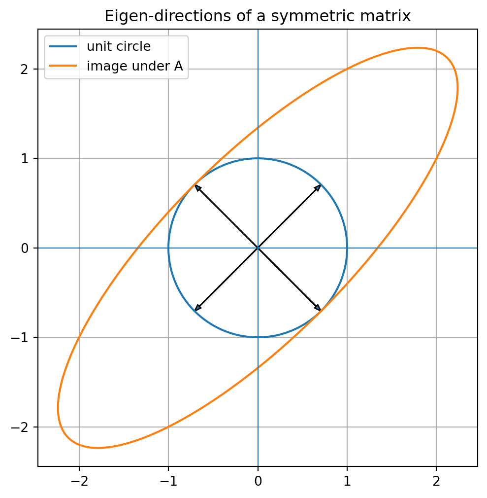

Code
import numpy as np
A = np.array([[3, 1],
[0, 2]], dtype=float)
values, vectors = np.linalg.eig(A)
values, vectors(array([3., 2.]),
array([[ 1. , -0.70710678],
[ 0. , 0.70710678]]))Hidden directions that survive a transformation
In the last several chapters, we learned to think of a matrix as a machine.
A vector goes in. A new vector comes out.
Some machines stretch the plane. Some rotate it. Some shear it. Some collapse information. Some project complicated data onto a simpler shadow. By now, the natural question is no longer only
What does this matrix do to one vector?
The deeper question is
What are the directions that explain the whole machine?
Imagine drawing many arrows on a sheet of transparent plastic. Now place the plastic inside a matrix machine. Most arrows change direction. A vertical arrow may tilt. A diagonal arrow may bend toward another direction. A short arrow may become long. A long arrow may become short.
But sometimes a few special directions survive.
They may stretch. They may shrink. They may reverse direction. They may even collapse to zero. But they do not turn away from their own line.
These special directions are eigenvectors.
The stretch factor along such a direction is an eigenvalue.
This chapter is about discovering the hidden directions of a matrix.
An eigenvector is a nonzero vector whose direction is preserved by a matrix transformation.
An eigenvalue tells how much the matrix stretches, shrinks, flips, or collapses that direction.
Eigenvectors are one of the most important ideas in linear algebra because they turn a complicated transformation into a small number of meaningful directions. They appear in stability, ranking, vibration, image processing, differential equations, Markov chains, PCA, graph theory, and neural networks.
By the end of this chapter, you should be able to:
Let \(A\) be a square matrix. A nonzero vector \(v\) is an eigenvector of \(A\) if there is a scalar \(\lambda\) such that
\[ Av = \lambda v. \]
The scalar \(\lambda\) is the eigenvalue corresponding to \(v\).
The equation \(Av=\lambda v\) says:
Applying \(A\) to \(v\) has the same effect as multiplying \(v\) by a number.
The matrix may be complicated in other directions, but on this special direction it acts like a simple scaling rule.
The zero vector satisfies \(A0=0\) for every matrix \(A\). If we allowed \(v=0\), every matrix would have the zero vector as an eigenvector, but it would tell us nothing. Eigenvectors are directions, and the zero vector has no direction.
The zero vector is never an eigenvector.
Eigenvectors must be nonzero.
If \(A\) is \(m \times n\), then \(A v\) is in \(\mathbb{R}^m\) while \(v\) is in \(\mathbb{R}^n\). The equation \(Av=\lambda v\) only makes sense when the input and output live in the same space. Therefore, the standard eigenvalue problem is for square matrices.
Later, singular values will extend a similar idea to rectangular matrices.
The eigenvalue \(\lambda\) describes what happens along an eigenvector direction.
| Eigenvalue | Geometric meaning |
|---|---|
| \(\lambda>1\) | stretch |
| \(0<\lambda<1\) | shrink |
| \(\lambda=1\) | unchanged direction and length |
| \(\lambda=0\) | collapse to zero |
| \(\lambda<0\) | flip direction and scale |
| \(\lambda=-1\) | flip with the same length |
If \(Av=3v\), the direction is stretched by \(3\).
If \(Av=\frac{1}{2}v\), the direction is shrunk by \(\frac{1}{2}\).
If \(Av=-2v\), the direction is flipped and stretched by \(2\).
If \(Av=0v=0\), the direction is completely collapsed.
Before computing eigenvalues, always ask:
The equation
\[ Av=\lambda v \]
can be rewritten as
\[ Av-\lambda v=0. \]
Since \(v=Iv\), this becomes
\[ (A-\lambda I)v=0. \]
For a nonzero solution \(v\) to exist, the matrix \(A-\lambda I\) must lose information. In other words, it must be singular:
\[ \det(A-\lambda I)=0. \]
The eigenvalues of a square matrix \(A\) are the solutions of
\[ \det(A-\lambda I)=0. \]
This equation is called the characteristic equation.
Once we find an eigenvalue \(\lambda\), we find its eigenvectors by solving
\[ (A-\lambda I)v=0. \]
So every eigenvalue problem has two stages:
Let
\[ A= \begin{bmatrix} 3 & 1 \\ 0 & 2 \end{bmatrix}. \]
Then
\[ A-\lambda I= \begin{bmatrix} 3-\lambda & 1 \\ 0 & 2-\lambda \end{bmatrix}. \]
The determinant is
\[ \det(A-\lambda I)=(3-\lambda)(2-\lambda). \]
So the eigenvalues are
\[ \lambda=3, \qquad \lambda=2. \]
Solve
\[ (A-3I)v=0. \]
Since
\[ A-3I= \begin{bmatrix} 0 & 1 \\ 0 & -1 \end{bmatrix}, \]
we get \(v_2=0\). Thus the eigenvectors have the form
\[ v= \begin{bmatrix} t \\ 0 \end{bmatrix}, \qquad t\ne 0. \]
One eigenvector is
\[ \begin{bmatrix} 1 \\ 0 \end{bmatrix}. \]
Solve
\[ (A-2I)v=0. \]
Since
\[ A-2I= \begin{bmatrix} 1 & 1 \\ 0 & 0 \end{bmatrix}, \]
we get
\[ v_1+v_2=0. \]
So \(v_1=-v_2\). One eigenvector is
\[ \begin{bmatrix} -1 \\ 1 \end{bmatrix}. \]
For \(v=\begin{bmatrix}1\\0\end{bmatrix}\),
\[ Av=\begin{bmatrix}3\\0\end{bmatrix}=3v. \]
For \(v=\begin{bmatrix}-1\\1\end{bmatrix}\),
\[ Av= \begin{bmatrix} -2 \\ 2 \end{bmatrix} =2 \begin{bmatrix} -1 \\ 1 \end{bmatrix}. \]
For a diagonal matrix
\[ D= \begin{bmatrix} 5 & 0 \\ 0 & 2 \end{bmatrix}, \]
we have
\[ D \begin{bmatrix} 1 \\ 0 \end{bmatrix} =5 \begin{bmatrix} 1 \\ 0 \end{bmatrix}, \qquad D \begin{bmatrix} 0 \\ 1 \end{bmatrix} =2 \begin{bmatrix} 0 \\ 1 \end{bmatrix}. \]
The coordinate axes are eigen-directions.
Diagonal matrices are easy because they already describe a transformation in its own natural directions.
A major goal of eigenvalue theory is to ask:
Can we find a coordinate system where a complicated matrix behaves like a diagonal matrix?
That question leads to diagonalization and the spectral theorem later in the book.
A matrix is symmetric if
\[ A^T=A. \]
For example,
\[ A= \begin{bmatrix} 2 & 1 \\ 1 & 2 \end{bmatrix} \]
is symmetric.
Symmetric matrices are especially important because their eigenvectors behave beautifully.
Real symmetric matrices have real eigenvalues and orthogonal eigenvectors.
For
\[ A= \begin{bmatrix} 2 & 1 \\ 1 & 2 \end{bmatrix}, \]
we can check:
\[ A \begin{bmatrix} 1 \\ 1 \end{bmatrix} = \begin{bmatrix} 3 \\ 3 \end{bmatrix} =3 \begin{bmatrix} 1 \\ 1 \end{bmatrix}, \]
and
\[ A \begin{bmatrix} 1 \\ -1 \end{bmatrix} = \begin{bmatrix} 1 \\ -1 \end{bmatrix} =1 \begin{bmatrix} 1 \\ -1 \end{bmatrix}. \]
The eigenvectors
\[ \begin{bmatrix}1\\1\end{bmatrix} \quad \text{and} \quad \begin{bmatrix}1\\-1\end{bmatrix} \]
are perpendicular.
This is why symmetric matrices are central in geometry, optimization, PCA, covariance matrices, graph Laplacians, and machine learning.
Eigenvectors become especially powerful when a matrix is applied repeatedly:
\[ x, \quad Ax, \quad A^2x, \quad A^3x, \quad \ldots \]
If \(v\) is an eigenvector with eigenvalue \(\lambda\), then
\[ A^k v = \lambda^k v. \]
So repeated matrix action becomes simple along eigenvector directions.
If \(|\lambda|>1\), that direction grows.
If \(|\lambda|<1\), that direction decays.
If \(\lambda<0\), the direction alternates sign.
If several eigen-directions are present, the one with the largest \(|\lambda|\) often dominates.
Eigenvalues tell the long-term behavior of repeated matrix action.
Suppose
\[ A= \begin{bmatrix} 1.1 & 0.2 \\ 0.1 & 0.9 \end{bmatrix}. \]
This matrix could represent a two-group population model. Applying \(A\) repeatedly evolves the population state.
The dominant eigenvector describes the long-term population mixture.
The dominant eigenvalue describes the long-term growth rate.
Eigenvectors can also describe importance.
Imagine a network of pages, people, papers, or teams. If important nodes point to you, then you should become more important. This circular idea can be written as an eigenvector problem.
A simplified ranking equation has the form
\[ Ar=\lambda r, \]
where:
The vector \(r\) is a self-consistent importance score.
This is one reason eigenvectors appear in search engines, citation analysis, sports ranking, and recommendation systems.
In data analysis, a matrix may describe covariance, similarity, or graph structure.
Eigenvectors then reveal important directions:
The same mathematical idea appears in many languages:
Find the directions where the system explains itself.
Some real matrices do not have real eigenvectors.
For example, the rotation matrix
\[ R= \begin{bmatrix} 0 & -1 \\ 1 & 0 \end{bmatrix} \]
rotates every nonzero vector by \(90^\circ\).
No real nonzero vector keeps its direction.
So \(R\) has no real eigenvectors.
But over the complex numbers, it has eigenvalues
\[ i \quad \text{and} \quad -i. \]
Complex eigenvalues often signal rotation or oscillation.
In this book, we mostly build intuition in real geometry first. Later chapters return to the role of complex numbers in Fourier analysis and signal processing.
import numpy as np
A = np.array([[3, 1],
[0, 2]], dtype=float)
values, vectors = np.linalg.eig(A)
values, vectors(array([3., 2.]),
array([[ 1. , -0.70710678],
[ 0. , 0.70710678]]))In NumPy, the columns of vectors are the eigenvectors. The corresponding eigenvalue is in the same position of values.
for j in range(len(values)):
lam = values[j]
v = vectors[:, j]
print("eigenvalue:", lam)
print("eigenvector:", v)
print("A v:", A @ v)
print("lambda v:", lam * v)
print()eigenvalue: 3.0
eigenvector: [1. 0.]
A v: [3. 0.]
lambda v: [3. 0.]
eigenvalue: 2.0
eigenvector: [-0.70710678 0.70710678]
A v: [-1.41421356 1.41421356]
lambda v: [-1.41421356 1.41421356]
import matplotlib.pyplot as plt
A = np.array([[2, 1],
[1, 2]], dtype=float)
values, vectors = np.linalg.eig(A)
# unit circle directions
theta = np.linspace(0, 2*np.pi, 300)
X = np.vstack([np.cos(theta), np.sin(theta)])
Y = A @ X
plt.figure(figsize=(6, 6))
plt.plot(X[0], X[1], label="unit circle")
plt.plot(Y[0], Y[1], label="image under A")
for j in range(2):
v = vectors[:, j]
v = v / np.linalg.norm(v)
plt.arrow(0, 0, v[0], v[1], head_width=0.05, length_includes_head=True)
plt.arrow(0, 0, -v[0], -v[1], head_width=0.05, length_includes_head=True)
plt.axhline(0, linewidth=0.8)
plt.axvline(0, linewidth=0.8)
plt.axis("equal")
plt.grid(True)
plt.legend()
plt.title("Eigen-directions of a symmetric matrix")
plt.show()
The unit circle becomes an ellipse. The eigenvectors point along the main axes of that ellipse.
This picture is one of the most important images in linear algebra.
A symmetric matrix stretches space along perpendicular directions.
Let
\[ A= \begin{bmatrix} 4 & 0 \\ 0 & -2 \end{bmatrix}. \]
Because \(A\) is diagonal, the coordinate directions are eigenvectors.
\[ A \begin{bmatrix} 1\\0 \end{bmatrix} = \begin{bmatrix} 4\\0 \end{bmatrix} =4 \begin{bmatrix} 1\\0 \end{bmatrix}, \]
and
\[ A \begin{bmatrix} 0\\1 \end{bmatrix} = \begin{bmatrix} 0\\-2 \end{bmatrix} =-2 \begin{bmatrix} 0\\1 \end{bmatrix}. \]
So the eigenvalues are \(4\) and \(-2\).
The first direction stretches by \(4\). The second direction flips and stretches by \(2\).
Let
\[ A= \begin{bmatrix} 1 & 2 \\ 0 & 1 \end{bmatrix}. \]
This is a shear. Its characteristic equation is
\[ \det(A-\lambda I)=(1-\lambda)^2=0. \]
So \(\lambda=1\) is the only eigenvalue.
Solving \((A-I)v=0\) gives
\[ \begin{bmatrix} 0 & 2 \\ 0 & 0 \end{bmatrix} \begin{bmatrix} v_1\\v_2 \end{bmatrix}=0. \]
Thus \(v_2=0\). The eigenvectors lie along the \(x\)-axis.
A shear preserves one direction and slides everything else along it.
Let
\[ P= \begin{bmatrix} 1 & 0 \\ 0 & 0 \end{bmatrix}. \]
This matrix projects points onto the \(x\)-axis.
The \(x\)-axis is unchanged, so \(\lambda=1\).
The \(y\)-axis collapses to zero, so \(\lambda=0\).
This shows why zero eigenvalues mean information loss.
Let
\[ A= \begin{bmatrix} 2 & 0 \\ 0 & 5 \end{bmatrix}. \]
Find the eigenvalues and eigenvectors.
Since \(A\) is diagonal, the coordinate directions are eigenvectors.
\[ A\begin{bmatrix}1\\0\end{bmatrix} =2\begin{bmatrix}1\\0\end{bmatrix}, \qquad A\begin{bmatrix}0\\1\end{bmatrix} =5\begin{bmatrix}0\\1\end{bmatrix}. \]
So the eigenvalues are \(2\) and \(5\).
Let
\[ A= \begin{bmatrix} 0 & 1 \\ 1 & 0 \end{bmatrix}. \]
This matrix swaps the two coordinates. Find its eigenvalues and eigenvectors.
The vector \(\begin{bmatrix}1\\1\end{bmatrix}\) is unchanged, so it has eigenvalue \(1\).
The vector \(\begin{bmatrix}1\\-1\end{bmatrix}\) is flipped, so it has eigenvalue \(-1\).
Thus the eigenpairs are
\[ \lambda=1, \quad v=\begin{bmatrix}1\\1\end{bmatrix}, \]
and
\[ \lambda=-1, \quad v=\begin{bmatrix}1\\-1\end{bmatrix}. \]
Let
\[ A= \begin{bmatrix} 2 & 1 \\ 1 & 2 \end{bmatrix}. \]
Show that \(\begin{bmatrix}1\\1\end{bmatrix}\) and \(\begin{bmatrix}1\\-1\end{bmatrix}\) are eigenvectors.
Compute:
\[ A\begin{bmatrix}1\\1\end{bmatrix} = \begin{bmatrix}3\\3\end{bmatrix} =3\begin{bmatrix}1\\1\end{bmatrix}. \]
So \(\lambda=3\).
Also,
\[ A\begin{bmatrix}1\\-1\end{bmatrix} = \begin{bmatrix}1\\-1\end{bmatrix} =1\begin{bmatrix}1\\-1\end{bmatrix}. \]
So \(\lambda=1\).
Explain why a \(90^\circ\) rotation matrix has no real eigenvectors.
A real eigenvector must keep its direction after the transformation. A \(90^\circ\) rotation turns every nonzero real vector into a perpendicular direction. No nonzero real vector stays on its original line. Therefore, there are no real eigenvectors.
Suppose \(Av=0\) for some nonzero vector \(v\). What does this tell you about \(A\)?
It means \(v\) is an eigenvector with eigenvalue \(0\). The matrix collapses the direction \(v\) to zero. Therefore, \(A\) loses information and is not invertible.
Use an AI assistant as a learning partner, not as a replacement for thinking.
Ask:
Explain eigenvectors to a beginner using the metaphor of directions that survive a transformation. Include one geometric example and one data example.
Then improve the answer by asking:
Make the explanation more precise and include the equation \(Av=\lambda v\).
Ask the AI to compute the eigenvalues of
\[ A= \begin{bmatrix} 3 & 1 \\ 0 & 2 \end{bmatrix}. \]
Then check the calculation yourself.
Ask:
Why do eigenvectors of a covariance matrix matter in PCA?
Then identify which parts of the answer depend on ideas from this chapter and which parts belong to later chapters.
Ask:
Design a visual explanation of eigenvectors using a unit circle transformed into an ellipse.
Then write your own version in two paragraphs.
Eigenvectors are the directions that a matrix transformation preserves. Eigenvalues are the scaling factors along those directions. The equation
\[ Av=\lambda v \]
is simple, but it reveals deep structure.
To find eigenvalues, solve
\[ \det(A-\lambda I)=0. \]
To find eigenvectors, solve
\[ (A-\lambda I)v=0. \]
Eigenvectors help us understand what a matrix really does. They reveal stable directions, growing directions, collapsing directions, ranking scores, data variation, and long-term behavior.
In the next chapter, we will use these ideas to study stability, ranking, and iteration in more depth.